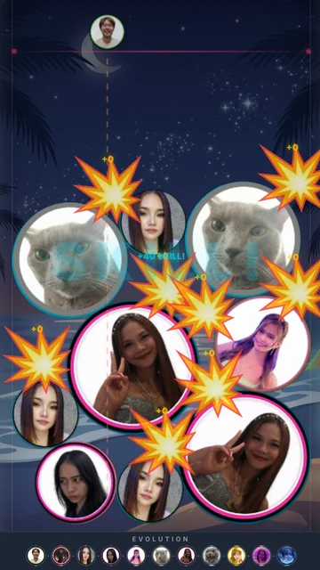
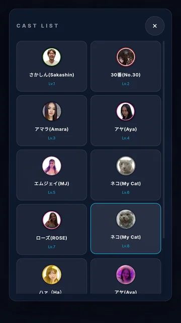
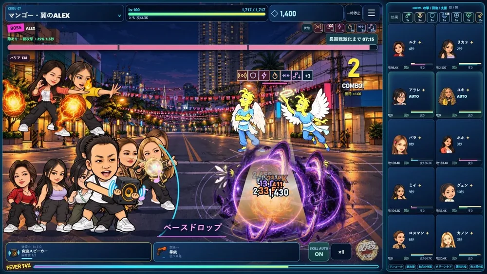
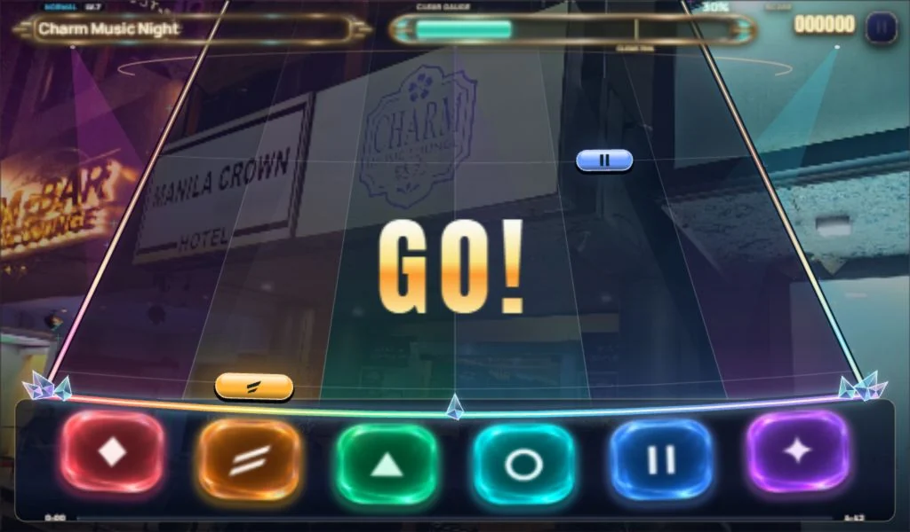

マージパズル
Tomo Game
旅で出会った仲間を盤面に落とし、同じ仲間をくっつけて進化させるパズルです。次にどの仲間になるかは図鑑でチェック。5回連続で合体させるとフィーバーに入ります。


とも旅のゲーム
旅先で出会った仲間や、旅動画で流れた曲をゲームにしました。3作品ともブラウザで遊べます。
マージパズル
旅で出会った仲間を盤面に落とし、同じ仲間をくっつけて進化させるパズルです。次にどの仲間になるかは図鑑でチェック。5回連続で合体させるとフィーバーに入ります。


街歩きRPG
とも旅ちゃんねるの仲間とチームを組んで、マニラ・マラテの夜を探索します。武器やスキルで敵の弱点を突き、自動で進む戦闘にタップや長押しで追撃できます。

6キーのリズムゲーム
ジュークボックスで気になる曲を試聴し、流れてくるノーツに合わせて6つのキーで演奏します。旅をテーマにした曲やオリジナル楽曲を含む全33曲・170譜面。日本語と英語、縦画面と横画面に対応しています。
カスタマイズ版「BEAT TRIPPER」が「アクションゲームの庵」に掲載されました。掲載特集を読む

v2.6.2では、古いAndroid System WebViewでタイトルのSTARTボタンや結果のスコアが表示されない問題を修正しました。ゲームを起動できないほどWebViewが古い場合は、Google Playで更新するための案内が表示されます。
v2.6.1では、リザルトで演出中の数字が確定スコアに重なる問題を修正しました。演奏キー周りの余分な枠を外し、判定ラインを見やすくしました。
v2.6.0では、Venice、初めてのホーチミンへ、星降る夜に…、旅の終わりに、大人のひとり旅(男性)の5曲が加わりました。「星降る夜に…」の隠し譜面はLUNATIC LV.35です。リゾートプールのステージ背景も更新しました。
v2.5.0では、タイトルからリザルトまで、夜のクラブをイメージした金色とネオンのデザインに刷新しました。レコード棚で曲を選び、写真入りの演奏券からプレイできます。宝石のようなノーツや判定の火花、ランクメダルを追加しました。光の演出は「設定 → 演出」で調整できます。
v2.4.3では横画面の見た目を縦画面に揃えました。丸みのある光沢ノーツ、横につぶれない宝石キー、奥行きのあるレーン、大きめの金色フレームで演奏できます。6つのキーの押せる範囲を確保し、ノーツの時刻・判定・速度設定はそのままです。
v2.4.2ではノーツ速度の初期値を3.0倍に変更しました。画像付きのクイックガイドで現在の速度と調整方法を紹介し、「速度を調整」からオプションへ移動できます。0.7〜4.0倍に変更でき、曲のテンポや押すタイミングは同じです。旧初期値の1.0倍・1.3倍は一度だけ3.0倍へ移行し、それ以外の調整値と、この版で選び直した速度は保持します。Android版の上書き更新の問題も修正しました。既存アプリを削除せずに更新できます。
v2.4.0では新曲「MJ」とセブ島のステージを追加しました。難易度はEASY 4／NORMAL 8／HARD 17／HELL 24／CHAOS 29。金色のフレーム、宝石調キー、クリスタルの縁飾り、虹色の判定ラインと照明で、画面も華やかになりました。
Charm Music NightのCHAOSはLV.27、甘い月のCHAOSはLV.29に譜面を変更。リゾートプールはEASY 7／NORMAL 11／HARD 16／HELL 22／CHAOS 26にし、新しくLUNATIC LV.31を追加しました。
新しいLUNATIC解禁条件は、通常CHAOSでAAA（900,000点）以上です。以前に解禁済みの譜面は引き継げます。通常HELLのクリアでCHAOSを解禁でき、FREEならゲージが0%になっても最後まで遊べます。15秒試聴、曲紹介、最高スコア・最高コンボ・クリア記録・レーティングにも対応。Android版は楽曲・背景・試聴を同梱し、オフラインで遊べます。
v1.9.1では選曲中の試聴音量を、タイトルやメニューのBGMと同程度に下げました。「メニュー・試聴音量」でまとめて調整できます。演奏中の楽曲音量は従来のままです。
v1.9では17曲を追加し、演奏チケットは全27色に。曲のアタックに合わせた全135譜面を共通のLV基準で調整し、最高CHAOS LV.31まで遊べます。サビ付近の15秒試聴、曲ごとの紹介・動画リンク、最高スコア・最高コンボ・クリア記録に対応。日本語と英語で曲名も切り替わり、縦横どちらでも弾む判定とコンボを見ながら遊べます。